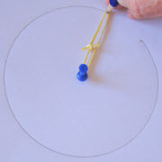
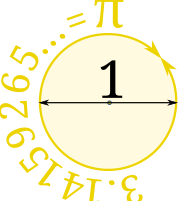
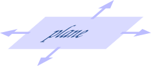
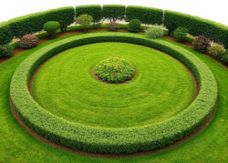

Circle
 |
A circle is easy to make: Draw a curve that is "radius" away from a central point. And so: All points are the same distance from the center. |

You Can Draw It Yourself
Put a pin in a board, put a loop of string around it, and insert a pencil into the loop. Keep the string stretched and draw the circle!
Play With It
Try dragging the point to see how the radius and circumference change.
(See if you can keep a constant radius!)
Radius, Diameter and Circumference

The Radius is the distance from the center to the edge.
The Diameter goes straight across the circle, through the center.
The Circumference is the distance once around the circle.
And here is the really cool thing:
When we divide the circumference by the diameter we get 3.14159265...
which is the number π (Pi)

So when the diameter is 1, the circumference is 3.14159265
We can say:
Circumference = π × Diameter
Example: You walk around a circle which has a diameter of 100m, how far have you walked?

Distance walked = Circumference = π × 100m
= 314m (to the nearest m)
Also note that the Diameter is twice the Radius:
Diameter = 2 × Radius
And so this is also true:
Circumference = 2 × π × Radius
In Summary:
| × 2 | × π |
| Radius | Diameter | Circumference |
Remembering
The length of the words may help you remember:
- Radius is the shortest word and shortest measure
- Diameter is longer
- Circumference is the longest
Definition
 |
The circle is a plane shape (two dimensional), so: |
Circle: the set of all points on a plane that are at a fixed distance from a center.
Area

The area of a circle is π times the radius squared, which is written:
A = π r2
Where
- A is the Area
- r is the radius
To help you remember think "Pie Are Squared" (even though pies are usually round):

Example: What is the area of a circle with radius of 1.2 m ?

Example: The Area of a Circular Garden
Imagine we have a circular garden with a radius of 5 meters:
Or, using the Diameter:

A = (π/4) × D2
Area Compared to a Square

A circle has about 80% of the area of a similar-width square.
The actual value is (π/4) = 0.785398... = 78.5398...%
And something interesting for you to try: Circle Area by Lines
Names
Because people have studied circles for thousands of years special names have come about.
Nobody wants to say "that line that starts at one side of the circle, goes through the center and ends on the other side" when they can just say "Diameter".
So here are the most common special names:
Lines

A line that "just touches" the circle as it passes by is called a Tangent.
A line that cuts the circle at two points is called a Secant.
A line segment that goes from one point to another on the circle's circumference is called a Chord.
If it passes through the center it is called a Diameter.
And a part of the circumference is called an Arc.
Slices

There are two main slices of a circle.

Quadrant
The Quadrant is a special sector with a right angle. It has a quarter of the circle's area.
Semicircle

Half a circle is called a Semicircle.
Inside and Outside

A circle has an inside and an outside (of course!). But it also has an "on", because we could be right on the circle.
Example: "A" is outside the circle, "B" is inside the circle and "C" is on the circle.